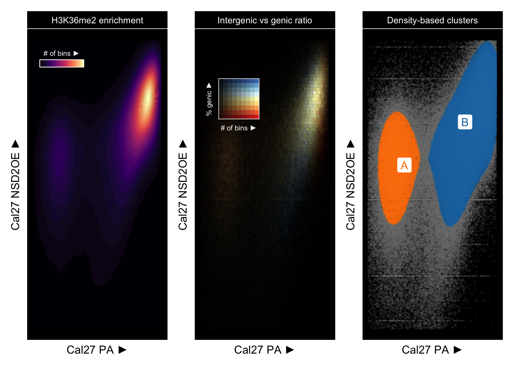
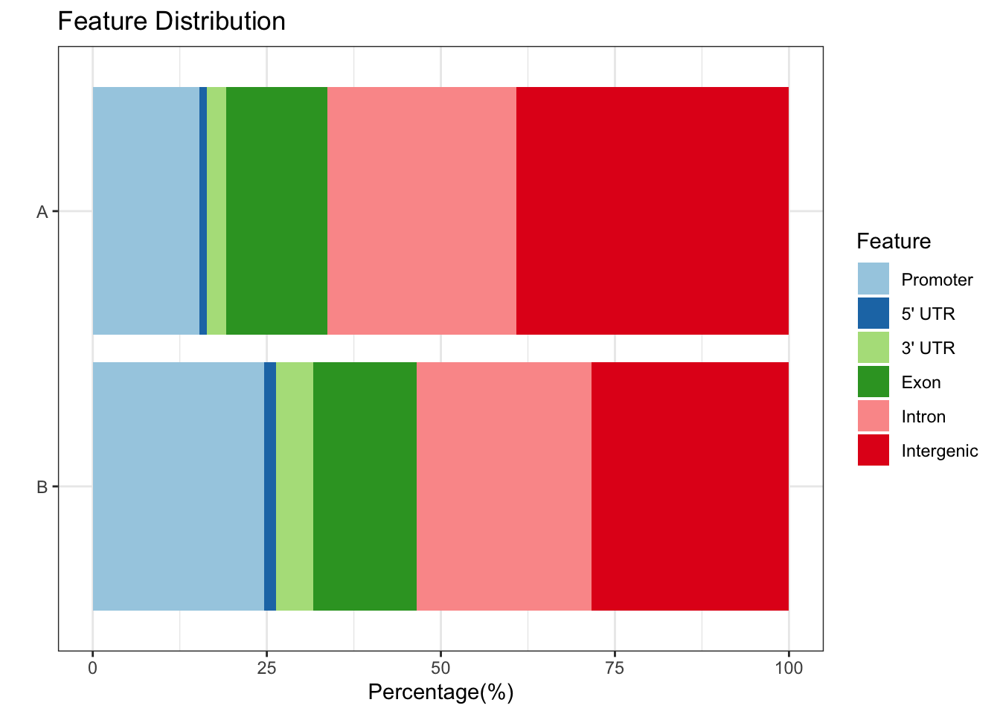
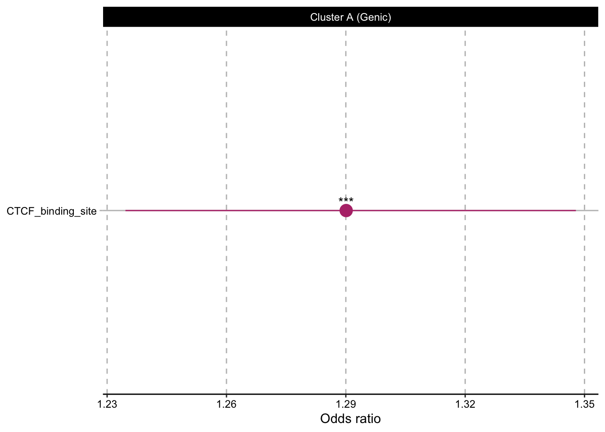
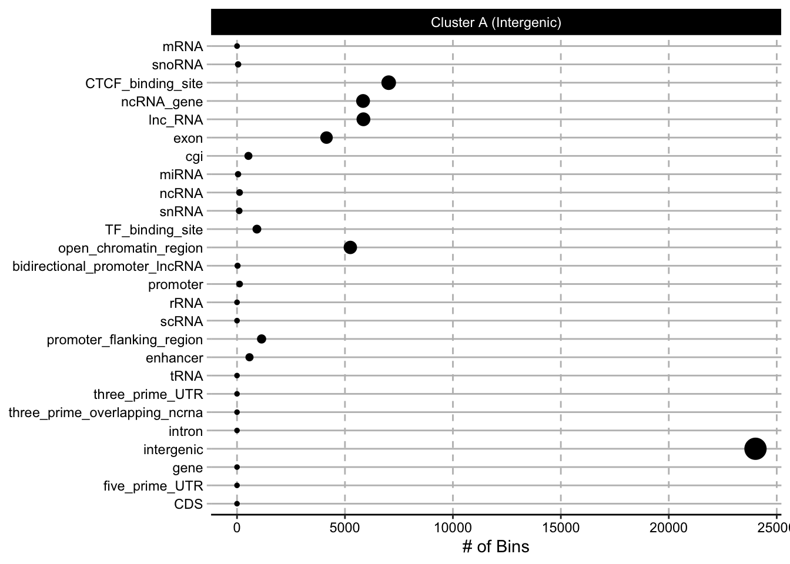
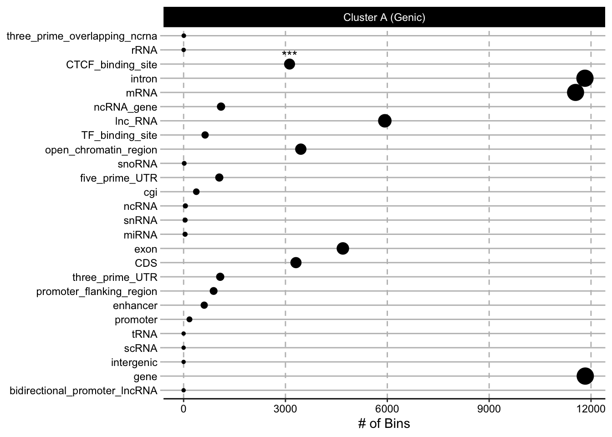
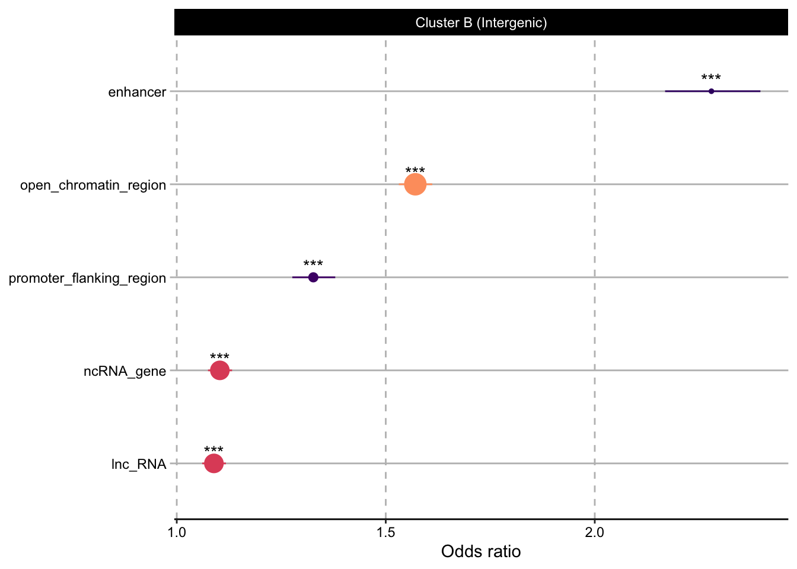

Nonetheless, we can proceed with the representative bins in those clusters we identified and examine whether they preferentially overlap certain elements.
Here we see consistent enrichment in CTCF binding sites.
Recently, NSD2-overexpression has been shown to alter CTCF binding within K36me2 enriched regions. https://www.nature.com/articles/s41467-019-12811-4. Similarly, regions that had increased K36me2 in NSD2OE relative to parental seems to be enriched at intragenic CTCF binding sites (cluster A). However, in intergenic regions, the effect is more indiscriminate and not specific to an annotated region, although some of the bins also overlap with intergenic CTCF binding sites.
Overlap enrichment result of Ensembl annotations. The size of the dots corresponds to number of bins overlapping the corresponding annotation. *** represents p-value < 1e-5 based on Fisher’s exact test of bins overlapping a specific class of annotated regions versus a background of all non-quiescent bins, meaning >10 reads in at least one mark in one sample.
Overlap enrichment result of Ensembl annotations. The size of the dots corresponds to number of bins overlapping the corresponding annotation. *** represents p-value < 1e-5 based on Fisher’s exact test of bins overlapping a specific class of annotated regions versus a background of all non-quiescent bins, meaning >10 reads in at least one mark in one sample.

snRNA = small nuclear RNA, which are associated with small nuclear ribonucleoproteins and involved in the processing of pre-mRNA
No significant overlap enrichment was found for the intergenic bins in cluster A. Hence, we will look at the # bins overlapping these annotated regions instead.

